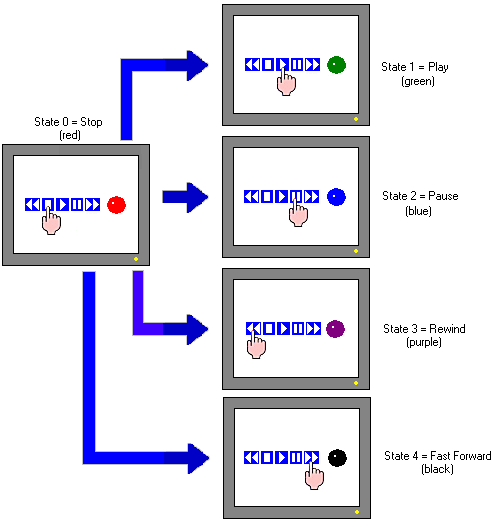

|
|
|
|
|
|
|
|
You can create a variety of N-State Lamps, with 3-31 or 3-32 states, using the Lamp Settings dialog box.

You can set up 3-17 states when using a 16-bit Integer with a Word by Bit Control type.
The following tutorial shows you how to create a 5-state lamp that changes color for each state change controlled by switches.

In the Graphical Objects toolbar, click the lamp icon and select N-State Lamp from the list.
Click and draw the area on the panel where you want to place the lamp.
The N-State Lamp Settings dialog box opens.
In the General tab, specify the following settings to control the lamp.
States: Select 5 states for Stop, Play, Pause, Rewind, and Fast Forward.
Category: Select Primitive as the format for the lamp's image. The Primitive and User Defined categories determine the selection of shapes available in the Shape list.
Style: Select a lamp shape from the Style list.
Control Type: Select Word by Value.
Integer: Set the integer variable that controls the state. 0 = Stop, 1 = Play, 2 = Pause, 3 = Rewind, and 4 = Fast Forward.
In the Color tab, specify the color settings for each lamp state. You can either:
Select a color resource from the Color Resource Library, or
Select Use Local Settings and then set up the different colors for the five states. Set up red for State 0 (Stop), green for State 1 (Play), blue for State 2 (Pause), purple for State 3 (Rewind), and black for State 4 (Fast Forward).
Click OK to insert the completed lamp on the panel.

You can use the N-State Lamp Settings dialog box to create various types of N-State Lamps.